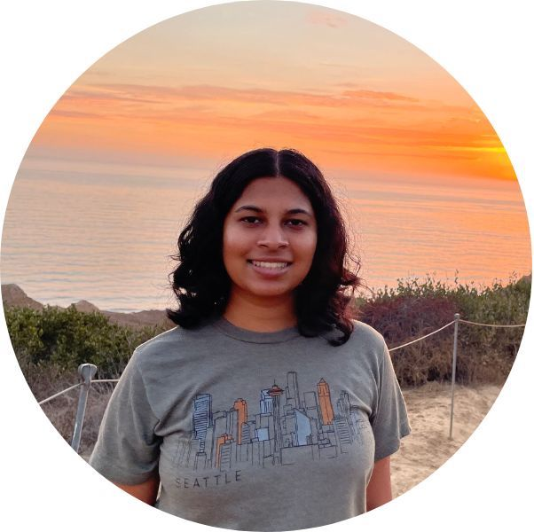

|
Rachana Madhukara
I am a recent graduate of MIT, where I studied Mathematics and Electrical Engineering and Computer Science. In the 2023-2024 academic year I will be a Fulbright scholar at the Renyi Institute in Budapest, Hungary.
I am interested in combinatorics and its applications to theoretical computer science, for example in information theory.
Outside of academics, I enjoy hiking and having thoughtful discussions with people! Please feel free to drop me a line anytime.
Email /
LinkedIn
|

|
|
Publications
I have published in combinatorics, number theory, and theoretical computer science. Following convention in mathematics and theoretical computer science, authors are listed in alphabetical order.
Permutoric Promotion: Gliding Globs, Sliding Stones, and Colliding Coins
Colin Defant, Rachana Madhukara, Hugh Thomas
Submitted to Combinatorial Theory, 2023
|
Improving the Runtime of Algorithmic Polarization of Hidden Markov Models
Vincent Bian, Rachana Madhukara
Submitted to the 2024 IEEE International Symposium on Information Theory, 2023
|
Adjacency and Broadcast Dimension of Grid and Directed Graphs
Rachana Madhukara
Submitted to Discrete Mathematics & Theoretical Computer Science, 2022
|
Orthogonal Fold & Cut
Joshua Ani, Josh Brunner, Erik D. Demaine, Martin L. Demaine, Dylan Hendrickson, Victor Luo, Rachana Madhukara
To appear in the Thai Journal of Mathematics, 2022
|
Edge-Unfolding Prismatoids: Tall or Rectangular Base
Vincent Bian, Erik D. Demaine, Rachana Madhukara
Presented at the Canadian Conference on Computational Geometry, 2021
Video of presentation
|
Fourier Coefficients of Level 1 Hecke Eigenforms
Mitsuki Hanada, Rachana Madhukara
Acta Arithmetica, 2021
|
|
|
Outreach and Teaching
Teaching and mentoring are very important to me. Here are a few of the organizations I have been involved with.
|
I was a mentor for the MIT PRIMES Circle. I taught graph theory during the 2020-2021 and 2021-2022 academic years.
|
|
I was a research mentor for the Research Science Institute (RSI) during the summer of 2022. I supervised a
project in number theory.
|
|
I was a teaching assistant at Euler Circle. I have assisted in the Real Analysis, Abstract Algebra classes, and Proofs from the BOOK classes.
|
|
I was the president of MIT's Undergraduate Society of Women in Mathematics (USWIM) for the 2022-2023 academic year.
|
I am one of the founders of the Virtual San Diego Math Circle, or vSDMC. We created a virtual math circle experience for students in the Greater San Diego area in the midst of the COVID-19 pandemic.
We also organized the Virtual San Diego Math League, or vSDML, in the fall of 2020. Please see below for some teaching samples.
- Cardinal Numbers (April 2020) (video, pwd: FeEuX&Y2020)
- Problems of Marriage (April 2020) (video, pwd: FeEuX&Y2020)
- How Big is the Earth? (February 2021) (video, pwd: SDMC@2021)
|
|
Other
|
One of my favorite things to do is hiking! My goal is to hike all 48 of the 4000ft (or taller) mountains in New Hampshire. Here's my progress.
|
|
My favorite class at MIT is How to Make (Almost) Anything. See here for what I made during the class!
|
|
One of my hobbies is art. I am interested in various mediums of art, including origami and painting. Additionally, I was an artist for the 2023 Brass Rat.
|
|
I have been learning Carnatic music for 15+ years and fencing casually for the past couple years. I fence foil and although I am definitely partial, I must say that foil is the best weapon!
|
|
|
{kind=link}